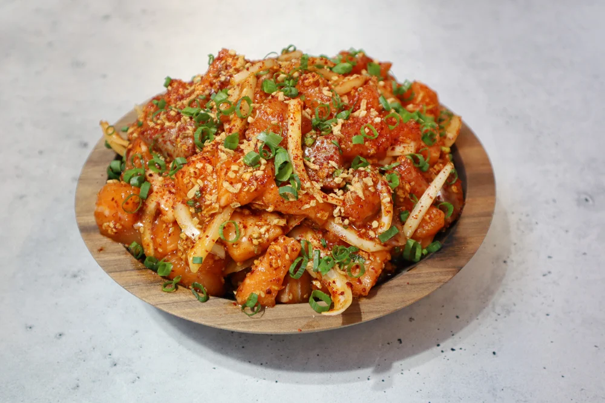
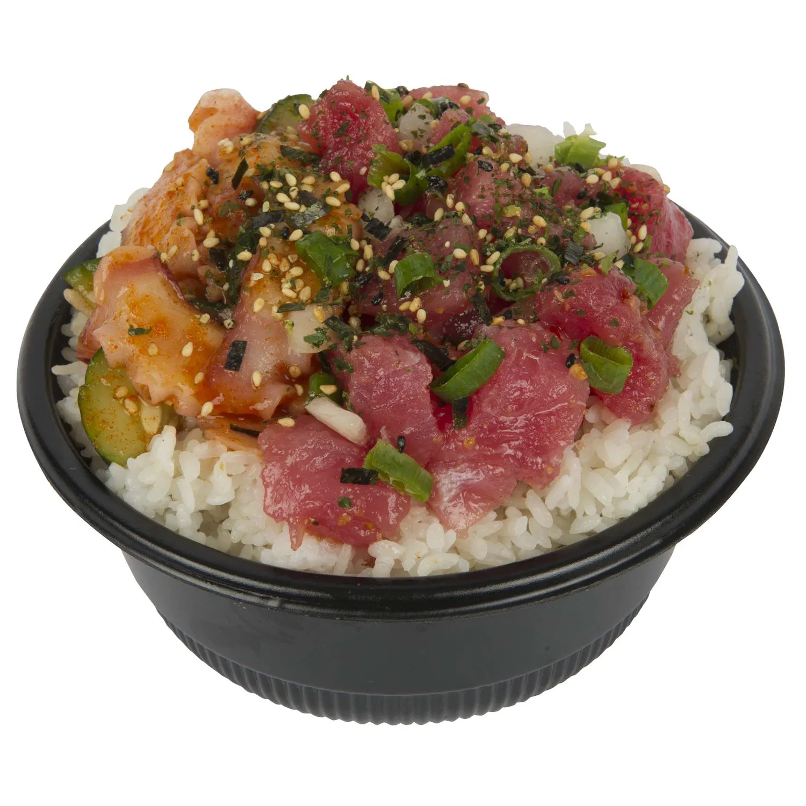

Prep Time: 10 min
Feeds: 2 people (or one if ur extra hungry)


Ingredients!
- 1 pound Salmon, flash-frozen (Or preferred fish)
- 1/4 Shoyu/Soy Sauce
- 2 Tbsp Oyster Sauce
- 1 tsp Seasame Oil
- 1 tsp Sugar
- Salt to taste
- 1/2 Cup Sweet Onion
- 3 Stalks Green Onion
Directions
- In a large mixing bowl, add your shoyu, oyster sauce, seasame oil, sugar, and salt.
- Whisk it all together to dissolve the salt and sugar into the marinade.
- Julienne the sweet onion and add it to your marinade.
- Thinly slice your green onion on a bias and add those into your marinade as well.
- Add your poke cubes to your marinade and mix it all together so each of the cubes are fully coated.
- Serve over rice, required.
- Eat right away or let it marinate overnight for richer flavor.